Coffee Shop Archive
SEATTLE'S BEST COFFEE
• STARBUCKS •
COFFEE BEAN AND TEA LEAF
 Starbucks Coffee
Starbucks Coffee
Starbucks Corporation is an American coffee company and coffeehouse chain. Starbucks was founded in Seattle, Washington, in 1971. As of early 2019, the company operates over 30,000 locations worldwide. Starbucks has been described as the main representative of "second wave coffee," a retrospectively termed movement that popularized artisanal coffee, particularly darkly roasted coffee. Since the 2000s, third wave coffee makers have targeted quality-minded coffee drinkers with hand-made coffee based on lighter roasts, while Starbucks nowadays uses automated espresso machines for efficiency and safety reasons.
"I ordered a pumpkin cream cold brew after a friend recommended it. When I got my drink, it looked very professional with the different layers of coffee and pumpkin cream. I stirred the two layers satisfyingly together and then took the first drink and I fell in love with the drink. The texture and taste were so creamy. The atmosphere was perfect for studying." - Reviews on Consumer Affairs
introduction
• diversity
• history
• distribution partners
• menu
• others
diversity
Starbucks is dedicated to creating a workplace that values and respects people from diverse backgrounds, and enables its employees to do their best work. We honour the unique combination of talents, experiences and perspectives of each partner, making Starbucks' success possible. As such we expect our partners to act with a spirit of kinship, tolerance and humanity towards all customers, making our brand welcoming to everyone.
about us
Back then, the company was a single store in Seattle’s historic Pike Place Market. From just a narrow storefront, Starbucks offered some of the world’s finest fresh-roasted whole bean coffees. The name, inspired by Moby Dick, evoked the romance of the high seas and the seafaring tradition of the early coffee traders.
In 1981, Howard Schultz (Starbucks chairman and chief executive officer) had first walked into a Starbucks store. From his first cup of Sumatra, Howard was drawn into Starbucks and joined a year later.
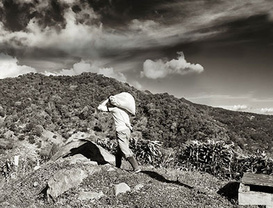 history
The first Starbucks was opened in Seattle, Washington, on March 31, 1971, by three partners who met while they were students at the University of San Francisco: English teacher Jerry Baldwin, history teacherZev Siegl, and writer Gordon Bowker were inspired to sell high-quality coffee beans and equipment by coffee roasting entrepreneur Alfred Peet after he taught them his style of roasting beans. Bowker recalls that Terry Heckler, with whom Bowker owned an advertising agency, thought words beginning with "st" were powerful. The founders brainstormed a list of words beginning with "st," and eventually landed on "Starbo," a mining town in the Cascade Range. From there, the group remembered "Starbuck," the name of the chief mate in the book Moby-Dick. Bowker said,
"Moby-Dick didn't have anything to do with Starbucks directly; it was only coincidental that the sound seemed to make sense."
The first Starbucks store was located in Seattle at 2000 Western Avenue from 1971–1976. This cafe was later moved to 1912 Pike Place. During this time, the company only sold roasted whole coffee beans and did not yet brew coffee to sell. During their first year of operation, they purchased green coffee beans from Peet's, then began buying directly from growers.

distribution partners
Starbucks has agreed to a partnership with Apple to collaborate on selling music as part of the "coffeehouse experience." In October 2006, Apple added a Starbucks Entertainment area to the iTunes Store, selling music similar to that played in Starbucks stores. In September 2007, Apple announced that customers would be able to browse the iTunes Store at Starbucks via Wi-Fi in the US—with no requirement to log into the Wi-Fi network—targeted at iPhone, iPod touch, iPad, and MacBook users. The iTunes Store will automatically detect recent songs playing in a Starbucks and offer users the opportunity to download the tracks. Some stores feature LCD screens with the artist name, song, and album information of the current song playing. This feature has been rolled out in Seattle, New York City, and the San Francisco Bay Area, and was offered in limited markets during 2007–2008.During the fall of 2007, Starbucks also began to sell digital downloads of certain albums through iTunes. Starbucks gave away 37 different songs for free download through iTunes as part of the "Song of the Day" promotion in 2007, and a "Pick of the Week" card is now available at Starbucks for a free song download. Since 2011, Starbucks also gives away a "Pick of the Week" card for app downloads from the App Store. A Starbucks app is available in the iPhone App Store.
Starting on June 1, 2009, the MSNBC morning news program Morning Joe has been presented as "brewed by Starbucks" and the show's logo changed to include the company logo. Although the hosts have previously consumed Starbucks coffee on air "for free" in the words of MSNBC president Phil Griffin, it was not paid placement at that time. The move was met with mixed reactions from rival news organizations, viewed as both a clever partnership in an economic downturn and a compromise of journalistic standards.
Starbucks and Kraft Foods entered into a partnership in 1998 to sell Starbucks products in the Mondelez grocery stores owned by the latter. Starbucks claimed that Kraft did not sufficiently promote its products and offered Kraft US$750 million to terminate the agreement; however, Kraft declined the offer, but Starbucks proceeded with the termination anyway. Starbucks wanted to terminate the agreement because at the time, single coffee packs were beginning to become popular. In their agreement, Starbucks was confined to selling packs that only worked in Kraft's Tassimo machines. Starbucks didn't want to fall behind in the market opportunities for k cups. In mid-November 2013, an arbitrator ordered Starbucks to pay a fine of US$2.8 billion to Kraft spin-off Mondelez International for its premature unilateral termination of the agreement.
In June 2014, Starbucks announced a new partnership with Arizona State University (ASU) that would allow Starbucks employees in their Junior and Senior years of college to complete four years of college at Arizona State University's online program for only around 23K. Starbucks employees admitted into the program will receive a scholarship from the college, College Achievement Plan (CAP), that will cover 44% of their tuition. The remaining balance and all other expenses would be paid by the student or through traditional financial aid. In April 2015, Starbucks and ASU announced an expansion of the College Achievement Program. The program would now allow all eligible part-time and full-time employees working in a U.S. Starbucks to enroll in the program for full-tuition reimbursement. After the completion of each semester, Starbucks reimburses the student their portion of the tuition. The student can then use the reimbursement to pay any loans or debt incurred during the semester.
In May 2015, Starbucks entered a partnership with music streaming service Spotify. The partnership entailed giving U.S.-based employees a Spotify premium subscription and to help influence the music played in store via playlists made using Spotify. Starbucks was also given its own curated Spotify playlist to be featured on Spotify's mobile app.
| ITEMS |

AMERICANO
|

BLONDE ROAST
|

CAPPUCINO
|

CHAI LATTE
|

PEACH TRANQUILITY
|
|
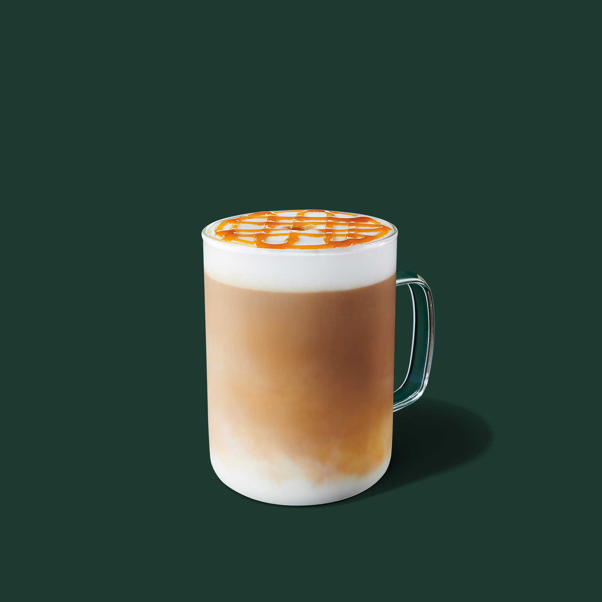
CARAMEL MACCHIATO
|
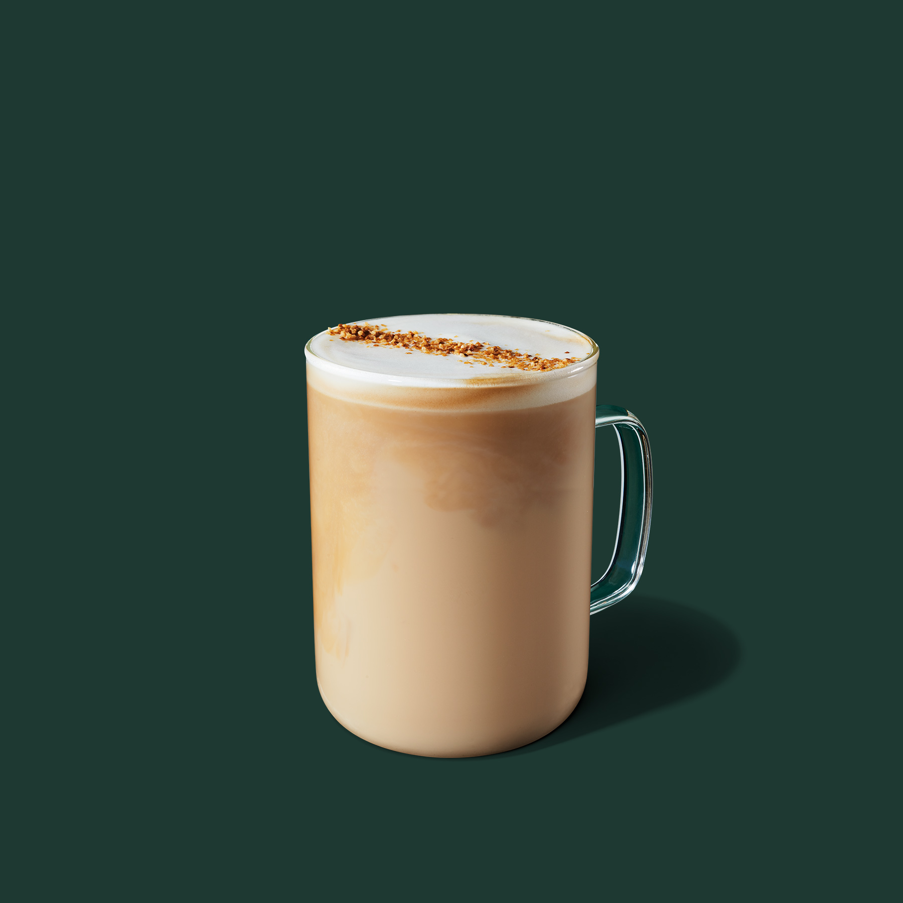
COCONUTMILK LATTE
|
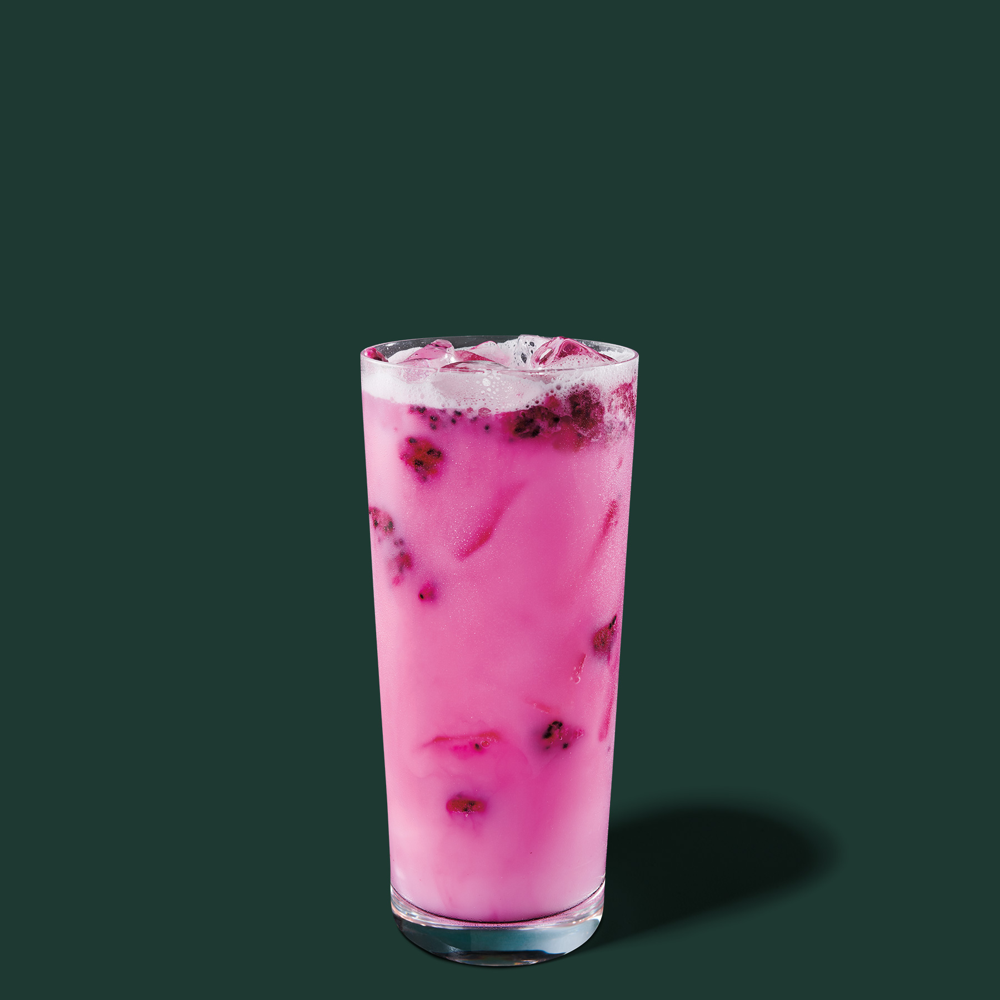
DRAGON DRINK
|
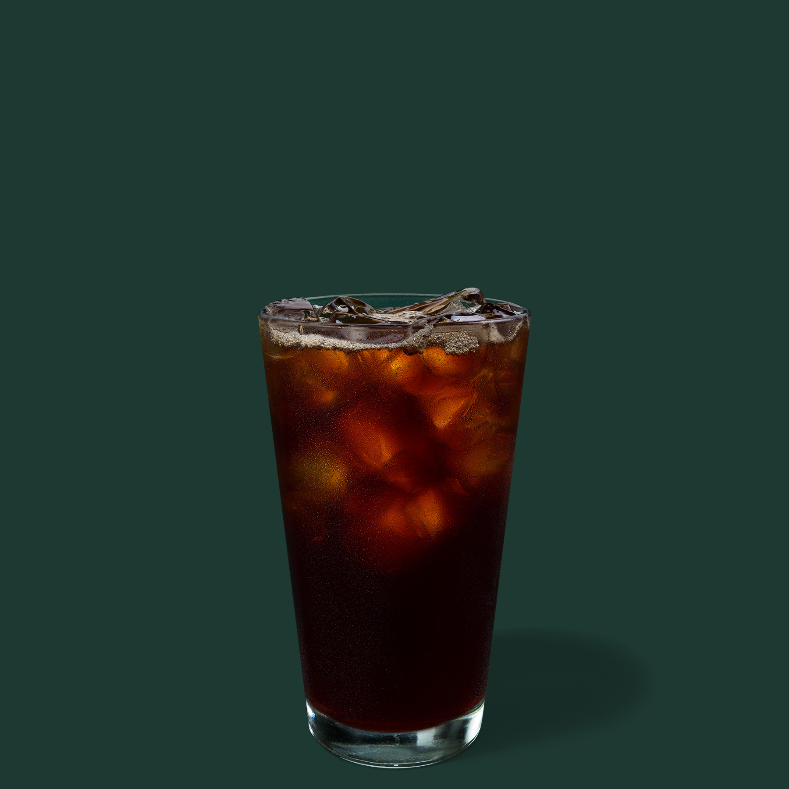
ICED COFFEE
|

ICED ESPRESSO
|
|
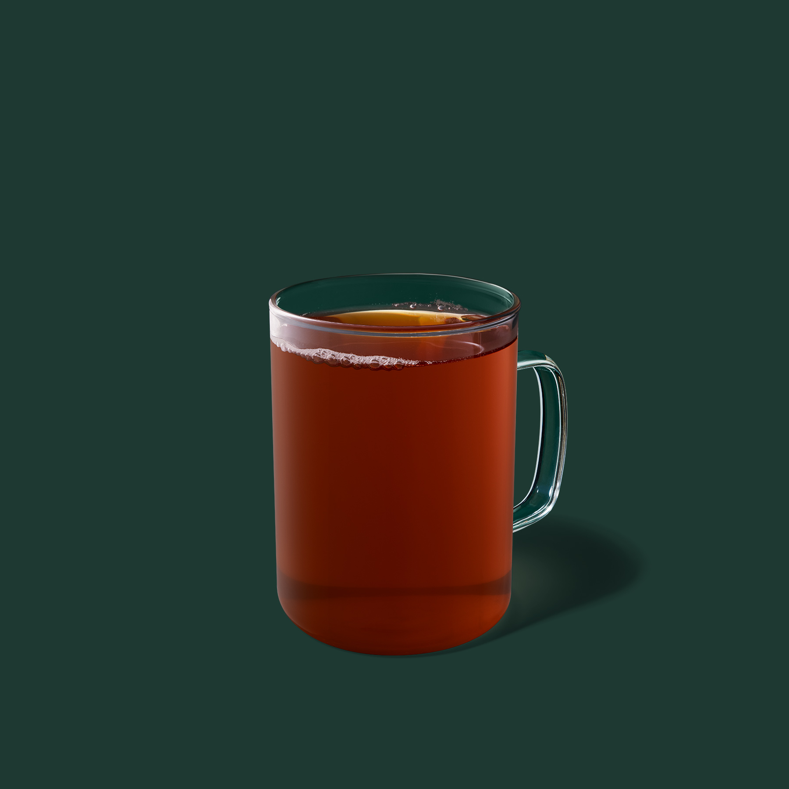
EARL GREY TEA
|
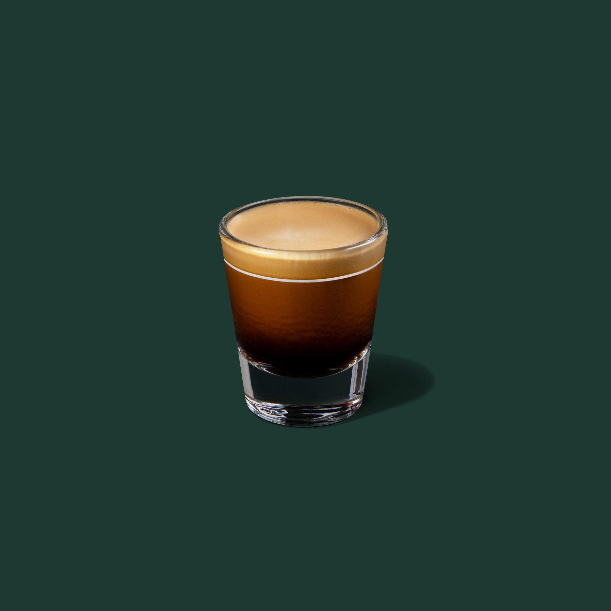
ESPRESSO
|

ETHOS BOTTLED WATER
|

ICED BLACK TEA
|
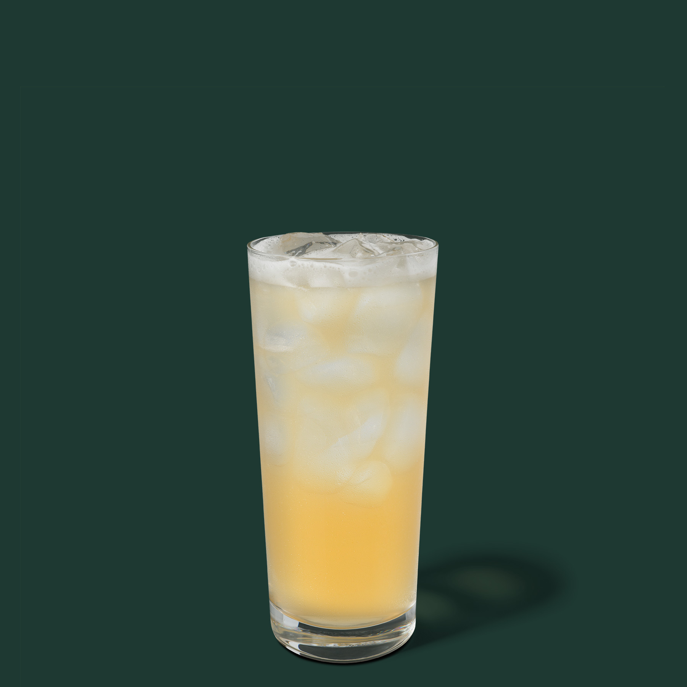
ICED GREEN TEA LEMONADE
|

ICED AMERICANO
|
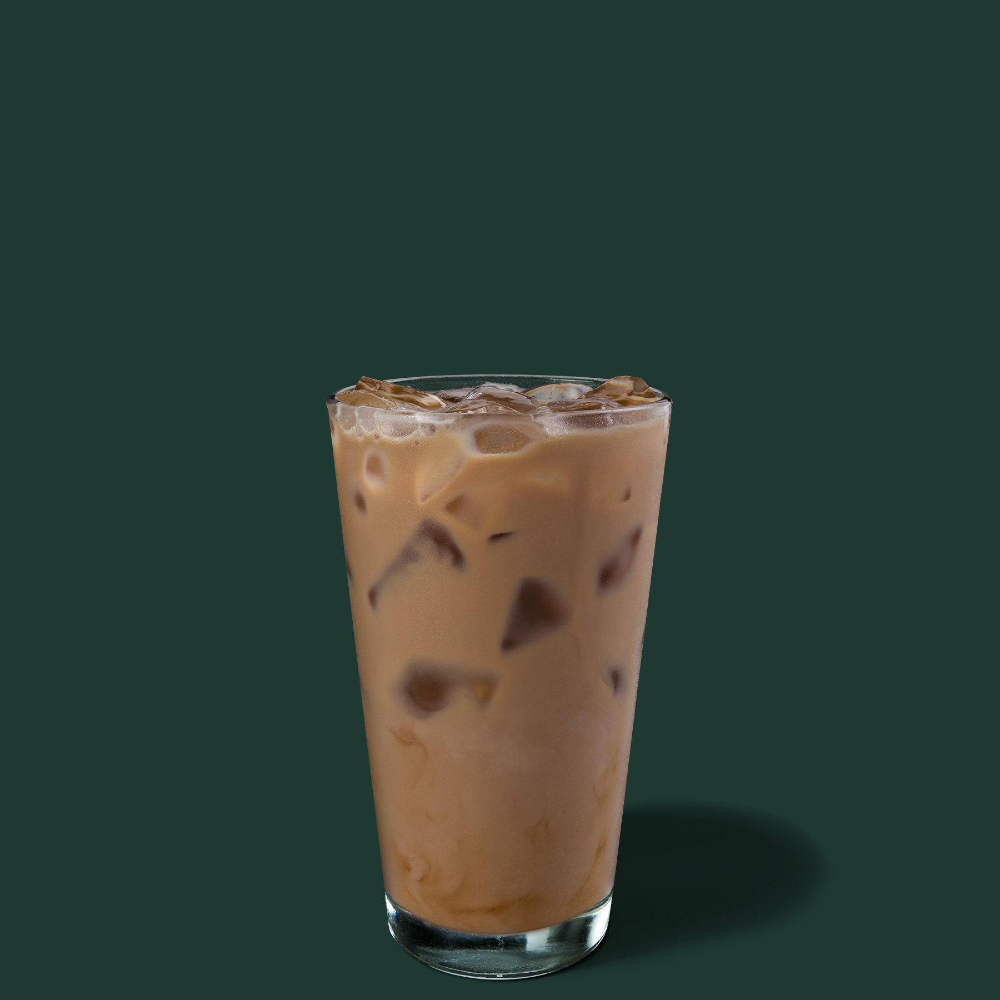
ICED CAFE LATTE
|
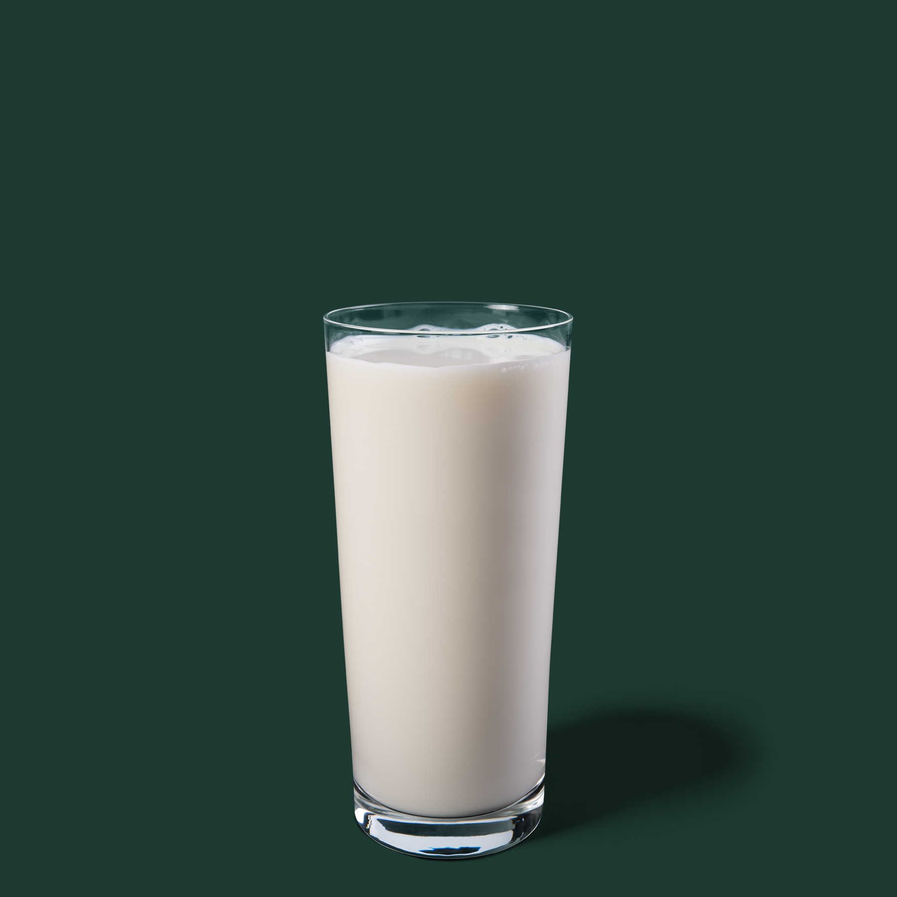
MILK
|

MATCHA LEMONADE
|

ICED WHITE TEA
|
|
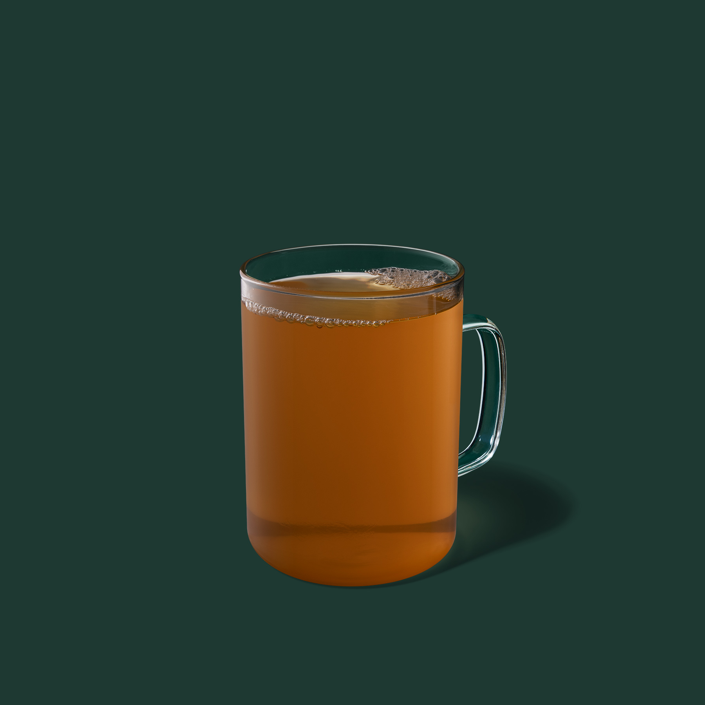
MINT MAJESTY
|

NITRO COLD BREW
|

PINK DRINK
|

CAFE MISTRO
|

PEPPERMINT MOCHA
|